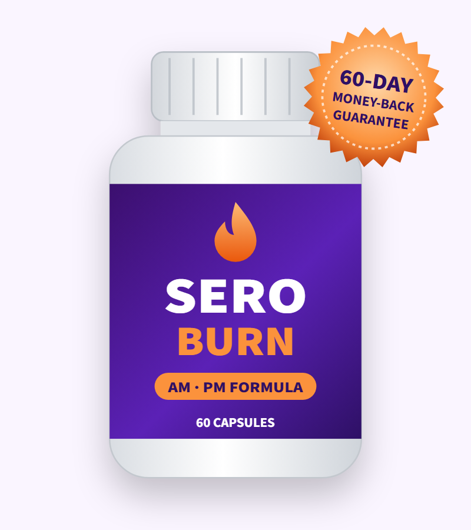
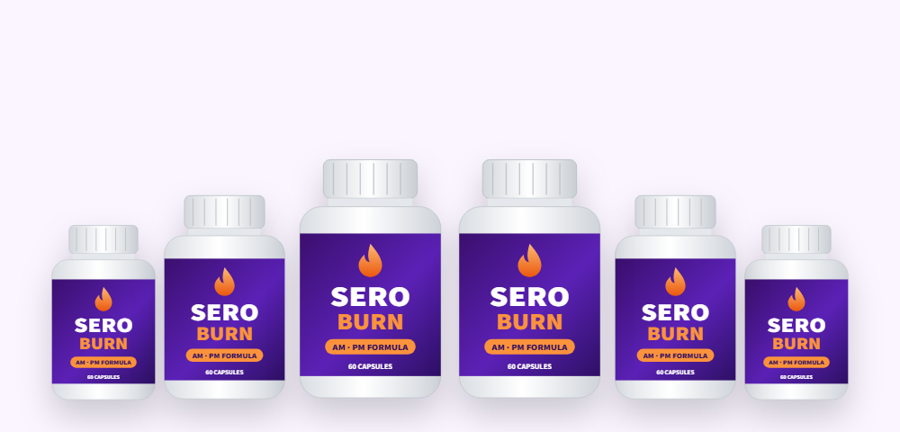
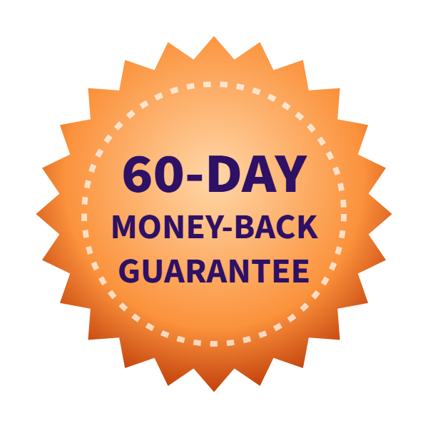

Serotonin Building Blocks
Griffonia seed provides 5-HTP and L-tryptophan is its precursor — the two steps the body uses to make serotonin, with vitamin B6 as a helper.*
What's inside SeroBurn, what serotonin supplements for weight loss can really do, and who should not take it

SeroBurn is a capsule supplement sold online for weight management. Its pitch is that low serotonin drives cravings and emotional eating, and that a morning and evening formula can restore balance. The main ingredients — Griffonia seed (a natural source of 5-HTP), L-tryptophan and saffron — really are linked to serotonin and appetite.
That also makes SeroBurn one of the few weight loss supplements with a serious drug interaction to know about. In this SeroBurn review we cover the formula, the research on serotonin weight loss supplements, who should avoid it, and the current SeroBurn price and how to order.
This is a weight management supplement whose story centers on serotonin, the brain chemical involved in mood, sleep and appetite. The idea is that when serotonin is low, people crave sugar and carbohydrates and eat for comfort — so supporting serotonin should make it easier to eat less.
The product comes in two parts: the main capsules, taken in the morning, and a PM formula for the evening that is aimed at sleep and late-night snacking. Each bottle holds 60 capsules, and the 3- and 6-bottle packages include free PM bottles.
A note on sources: The vendor's own sales page did not load for us when we checked on October 18, 2026, so the ingredient and pricing details here come from the product information as shown on sites that sell it. We'll update this review when we can confirm the official label.
It is a dietary supplement, not a weight loss drug, and it hasn't been evaluated by the FDA.
Griffonia seed provides 5-HTP and L-tryptophan is its precursor — the two steps the body uses to make serotonin, with vitamin B6 as a helper.*
Saffron and 5-HTP have been studied for snacking and carbohydrate cravings, and higher serotonin is linked to feeling full sooner.*
White kidney bean extract partly blocks starch digestion, and green tea catechins give a small boost to energy use.*
The serotonin–appetite link is genuine: prescription drugs that act on serotonin pathways (such as the now-withdrawn lorcaserin) reduced appetite in large trials. But supplements that simply supply raw materials for serotonin have a much weaker effect, because the body tightly controls how much serotonin it makes and where.
The PM formula is described as supporting relaxation and sleep, with ingredients such as L-theanine and valerian root mentioned in product descriptions. Better sleep does help appetite control, since short sleep raises hunger hormones.
Ingredients named in the product information. The amount of each per serving has not been published.
| Ingredient | What it is | Why it's included |
|---|---|---|
| Griffonia simplicifolia seed extract | African plant, rich in 5-HTP | Direct precursor to serotonin; appetite and mood |
| L-tryptophan | Essential amino acid | Converted to 5-HTP, then serotonin |
| Saffron extract | Crocus sativus stigma | Mood and snacking urges |
| Vitamin B6 | Water-soluble vitamin | Helps convert 5-HTP into serotonin |
| White kidney bean extract | Phaseolus vulgaris | Alpha-amylase (starch) blocker |
| Green tea extract | Catechins and caffeine | Metabolism and energy |
| Stinging nettle leaf | Urtica dioica | Traditional herb; marketed for stress and balance |
The PM formula is described as including calming ingredients such as L-theanine and valerian root.
This is a more focused formula than many weight loss supplements: four of the seven ingredients relate directly to serotonin or appetite. Without amounts, though, we can't tell whether the capsules include the 50–300 mg of 5-HTP or the 30 mg of saffron extract that studies have used — or a token sprinkle.
Our take: the ingredient choices make sense for an appetite-focused supplement, but the missing doses and the serotonin interaction risk are real drawbacks.
| Ingredient | Typical studied dose | What studies found |
|---|---|---|
| 5-HTP (Griffonia) | 300–900 mg a day | Small 1990s trials: less food intake and a few pounds of extra weight loss over 6–12 weeks; frequent nausea |
| L-tryptophan | 1–3 g a day | Little direct evidence for weight loss |
| Saffron extract | 30–176 mg a day | One 8-week trial: less snacking and slightly more weight loss than placebo |
| White kidney bean extract | 1.5–3 g a day | Reviews: about 1–2 kg more weight loss than placebo |
| Green tea catechins | 300–800 mg EGCG | Very small effect on weight; liver injury reported with high-dose extracts |
| Vitamin B6 | 1–2 mg | Needed for serotonin; no weight loss effect on its own |
| Stinging nettle | — | No weight loss evidence |
Serotonin weight loss supplements have a plausible mechanism and a handful of small, older studies. The 5-HTP trials that showed reduced eating used high doses — up to 900 mg a day — and many participants felt sick, which may itself have reduced eating. Saffron's evidence comes mainly from one well-designed but small trial.
The strongest-evidence ingredient for actual weight loss in the formula is white kidney bean extract, but studies used 1.5–3 grams a day, which is hard to fit into two capsules alongside everything else.
Testimonials such as "I've lost over 142 pounds" in the sales materials can't be verified and are far beyond what any of these ingredients have shown in research.
Serotonin weight loss supplements are popular because the science sounds tidy: serotonin helps you feel satisfied, carbohydrates temporarily raise serotonin, so low serotonin could drive carb cravings. Some of that holds up and some doesn't.
Serotonin signalling in the brain does help control appetite and fullness. Drugs that strongly activate specific serotonin receptors reduce how much people eat, and depression and poor sleep are both linked to overeating.
Most of the body's serotonin is made in the gut and never reaches the brain. Taking 5-HTP raises serotonin throughout the body, not just in appetite centers, which is why nausea is so common. And there's no reliable test for "low serotonin" as a cause of weight gain.
In studies, serotonin supplements for weight loss produced modest reductions in appetite and a few extra pounds lost over several weeks — useful for some people, but nothing like prescription GLP-1 drugs or a sustained change in diet.
Possible benefits of this formula, if the doses are adequate.*
5-HTP and saffron may reduce snacking and carbohydrate cravings for some people.*
Higher serotonin is linked to earlier fullness at meals.*
The PM formula targets relaxation and late-night snacking.*
Green tea extract provides a little caffeine and catechins.*
Pair it with protein-rich meals, more vegetables and regular activity. Any supplement works best — if at all — alongside those basics.
SeroBurn's ingredients are generally well tolerated by healthy adults, but this is not a supplement to take casually if you're on medication.
SeroBurn has a more sensible formula than many diet pills: it targets appetite with ingredients that have at least some research behind them. The catch is that we can't see the doses, and the very ingredients that might curb cravings — 5-HTP and tryptophan — make it unsuitable for the many people who take antidepressants or migraine medicine.
If you're a healthy adult on no serotonergic medication and cravings are your main obstacle, SeroBurn is a reasonable thing to try with the 60-day guarantee as a safety net. Expect modest help, not dramatic weight loss.
Visit the SeroBurn Official Website| Option | How it works | Typical cost | Evidence |
|---|---|---|---|
| SeroBurn | Serotonin precursors + starch blocker | $39–$59 a month | Ingredient-level only, small studies |
| Plain 5-HTP capsules | Serotonin precursor | $10–$20 a month | Small, older trials; same interaction risk |
| High-protein, high-fiber diet | Fullness and fewer calories | Grocery cost | Strong |
| Prescription GLP-1 medicines | Appetite hormones | Varies widely | Strong; 10–20% weight loss in trials |
| Structured programs or dietitian | Behavior and nutrition | Varies; sometimes covered | Strong |
Aim for 25–30 g of protein per meal to stay full longer.
Eat a satisfying dinner, brush your teeth after it, and keep easy snacks out of sight.
Walking 30 minutes a day improves mood and appetite control.
Short sleep raises hunger and cravings for sweets the next day.
Pause and name the feeling before snacking; stress and boredom often drive it.
Weekly averages show the real trend.
Searching for SeroBurn brings up the official page, review sites and marketplace listings. To get the genuine AM and PM formulas:
Each SeroBurn bottle is a 30-day supply, covered by the 60-day money-back guarantee.
30-Day Supply
$59/bottle
No bonuses
180-Day Supply · Best Value
$39/bottle
+ 2 free PM bottles & 2 bonuses
90-Day Supply
$49/bottle
+ 1 free PM bottle & 1 bonus
Prices as listed for SeroBurn on October 18, 2026; please confirm on the official order page, as prices may change. One-time payment.


SeroBurn comes with a 60-day money-back guarantee. If you're not satisfied, contact the seller within 60 days of purchase and return the product — even empty bottles — for a refund, minus shipping and handling.
Sixty days is shorter than many supplement guarantees, so decide by week six or seven whether it's helping your cravings.
Try SeroBurn Risk-FreeSeroBurn is a weight management supplement built around serotonin. Its listed ingredients include Griffonia simplicifolia seed extract (a source of 5-HTP), L-tryptophan, saffron extract, white kidney bean extract, green tea extract, stinging nettle leaf and vitamin B6. It is sold as a morning formula with a separate SeroBurn PM formula for the evening.
There are no published studies on SeroBurn itself. Some of its ingredients have modest evidence: 5-HTP reduced food intake in small older trials, saffron reduced snacking in one trial, and white kidney bean extract produced small weight loss in several studies. The doses in SeroBurn are not published, so it is impossible to say whether it matches the amounts studied.
Serotonin plays a real role in appetite and fullness, and prescription drugs that act on serotonin can reduce appetite. Over-the-counter serotonin weight loss supplements such as 5-HTP and tryptophan have only small, short-term studies behind them, with weight loss of a few pounds at best. They are not a substitute for diet, activity or medical treatment.
No — not without your doctor's approval. 5-HTP and L-tryptophan raise serotonin, and combining them with SSRIs, SNRIs, MAO inhibitors, triptans, tramadol, St. John's wort or other serotonergic drugs can cause serotonin syndrome, which can be dangerous.
Product information describes two SeroBurn capsules in the morning with water, plus the SeroBurn PM formula in the evening. Follow the directions printed on your bottles, and start with the lowest amount if you are sensitive to supplements.
SeroBurn costs $59 for one bottle plus shipping, $49 per bottle for three bottles ($147, including one free SeroBurn PM bottle and a bonus) and $39 per bottle for six bottles ($234 with free shipping, including two free PM bottles and two bonuses).
The most common side effects of 5-HTP and tryptophan are nausea, heartburn, stomach pain, diarrhea and drowsiness. Green tea extract adds some caffeine. White kidney bean extract can cause gas and bloating. Stop and see a doctor if you develop agitation, fast heartbeat, sweating, muscle twitching or confusion.
Not necessarily. Amazon and Walmart listings use the SeroBurn name for products from other brands with different formulas. To get the product described here, use the official order page.
SeroBurn comes with a 60-day money-back guarantee. You can return the product, including empty bottles, within 60 days of purchase for a refund minus shipping and handling.
No. SeroBurn is sold as a one-time payment with no recurring charges.
No. 5-HTP, tryptophan, saffron and green tea extract have not been shown to be safe in pregnancy or breastfeeding, and saffron in larger amounts may stimulate the uterus.
The seller suggests using SeroBurn for two to three months. Appetite-related effects of 5-HTP in studies appeared within weeks, so if you notice no change in cravings after six to eight weeks, it is reasonable to stop and use the 60-day guarantee.
Get SeroBurn for as little as $39 per bottle with free shipping on the 6-bottle package, which also includes free SeroBurn PM bottles — backed by a 60-day money-back guarantee. Check with your doctor first if you take any mood or migraine medicine.
Order SeroBurn Now